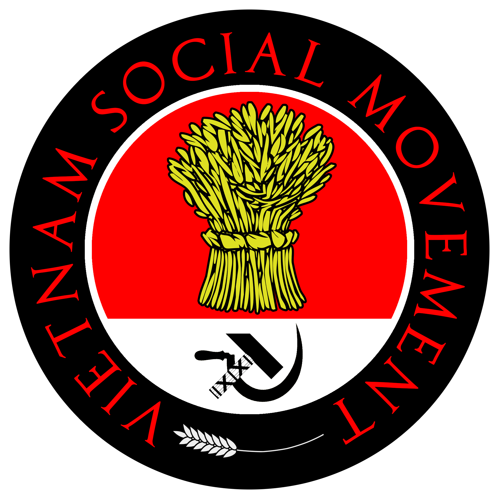

The Vietnamese revolution cannot be separated from the task of national liberation. And in that, the task of preserving culture and tradition is of immense importance. This preservation is the preservation of the Vietnamese culture and traditions as a whole, and also of the ethnic minorities within our nation. This preserving of culture means building a united national community, a class community around the idea of the Vietnamese nation and its traditions.
National and class consciousness
Through culture and tradition, people find their roots, and a common
root goes a long way in bringing the working men and women together and
creating within it is a sense of community – forming a class/national identity.
From within the (this) national identity, solidarity and class consciousness
emerge, hence collective action emerges. This concept of the solidarity of
people can only emerge in them through a common understanding – a sharing -
of their common culture, common language, common historical experience –
all that cultivates into one’s shared lived experience.
In the case of Vietnam, that national identity emerged from the understanding
(the empathy and understanding from person to person) through common history,
a common culture, a common origin, and common struggle – the class
struggle – the most recent and most uniting force. All of which seems like
separate entities, but are in fact one, under the specific historical context
of Vietnam. The long struggles for class and national liberation for Vietnam
has been the uniting force for such. Such struggles resulting in the sense
of lineage – the pride in one’s ancestors, and the class struggle being two
but one. The essence of tradition is now in the essence of common lived
experienced, from which a common consciousness is built.
Relate the poem "The Nation" from which to deduce the point of view of the national will

Poet Nguyễn Khoa Điềm. Image: Thi Viện
Such consciousness while seemingly distant and sublime,
is nothing but close and real. The national consciousness,
which in itself is class consciousness is real and perhaps more
real than anything. Such consciousness find its essence in everyday
objects. Famous Vietnamese revolutionary poet Nguyen Khoa Diem once
wrote:
Khi ta lớn lên Đất Nước đã có rồi
(When we were born The Nation is already there)
Đất Nước có trong những cái “ngày xửa ngày xưa...” mẹ thường hay kể
(The Nation is there in the rhymes of old times mom used to sing)
Đất Nước bắt đầu với miếng trầu bây giờ bà ăn
(The Nation starts with the betel nut grandma is chewing)
Đất Nước lớn lên khi dân mình biết trồng tre mà đánh giặc
(The Nation grows whem our people learned to grow bamboos to fight off invaders)
Tóc mẹ thì bới sau đầu
(Mom's hair tied back into a bun (indicating labor))
Cha mẹ thương nhau bằng gừng cay muối mặn(0)
(Mom and dad loved each other through thick and thin)("gừng cay muối mặn"(0) means
Spicy ginger, salty salt, same expression as the English "thick and thin")
Cái kèo, cái cột thành tên
(The truss, the collumn now has names (functionalities))(indicating the labor of building (a home), of construction)
Hạt gạo phải một nắng hai sương xay, giã, giần, sàng
(Rice grains must be milled, pounded, grounded, sieved)(also indicating labour)
Đất Nước có từ ngày đó...
(The Nation exists from then)(from labour)
Đất (1) là nơi anh đến trường
(The Nation is where I went to school)("Đất (1)" in Vietnamese means the ground)
Nước là nơi em tắm
(THe nation is your showers)("Nước(2)" in Vietnamese means water)
Đất Nước là nơi ta hò hẹn
(The nation is where we started dating)(When put "Đất"(1) and "Nước"(2) together get "Đất Nước" (land and sea) meaning "the nation"
...
The common consciousness, which is (manifested in) the national spirit lies
in everyday objects, events, phenomena (material objects): the nation is where
I went to school (đất là nơi anh đến trường), the nation is where we started
dating (đất nước là nơi ta hò hẹn), … And hence the national spirit transcends
the everyday objects, into the ultimate will of the people who share and who
have shared such experience. That common experience is like a common strain
connecting the living spirit, the spirits that will live and the spirit of the
death, creating a sense of lineage: “The nation is already there we were born”.
Our people, our children and our ancestors are the nation and the nation is our
people, our children and our ancestors, one is intrinsically the other, one in
all, all in one. The national, the tradition and the personal are hence fused
into one single entity that subsumes everything, itself becoming THE totality
of existence, that of both “sein” (being) and “dasein” (being-there).

". The national, the tradition and the personal are hence fused into one single entity that subsumes everything, itself becoming THE totality of existence". Image: Military Parade Hanoi 1985
The nation then gains class characteristics for the people holds class characteristics – the nation is the class, the class is the nation, so on and so forth. And inseparable from that (the nation), is the common culture and traditions, as a person is but his relations to others, and to that end, his relation to his past generations is presence in himself, in his class, in his nation, as explained above.
Analysis of views of Marx and later Ho Chi Minh on tradition
Relating to this, Karl Marx once wrote:
“The tradition of all dead generations weighs like a nightmare
on the brains of the living.”
This is written in “The Eighteen Brumaire of Louis Bonaparte”, and it as
well as a lot of excerpts from this work should be understood as a
criticism of tradition. In the sense of tradition being a potential force of
oppression from the ruling order preventing the oppressed class from
gaining revolutionary consciousness and preventing social changes and
progress. But this is in no way a total reaction against tradition as a
whole, and it would be naïve to claim that all traditions hitherto is
nothing but oppressive customs. History has proven the fact that tradition
can come from the oppressed class – the people (volk) – in the sense of
folk traditions, folklores and folk tales, traditional hymns, farming
songs (đồng dao) … as much and perhaps more so than it is from the ruling
class. What can be taken from Marx, however, is the claim that tradition
can have large influence on the forming of a class identity.

The Eighteen Brumaire of Louis Bonaparte - Marx, Karl. Image: Wikipedia

During the process of leading the revolution, the Party and President
Ho Chi Minh "... brought into full play the strength of solidarity and
struggle of the whole Vietnamese nation, promoting all the beautiful traditions
of the nation. from thousands of years ago. The past comes to life more
beautifully than ever in the epic of the present, and the present is
sowing precious seeds for bright tomorrows.”
- Prime Minister Pham Van Dong
Ho Chi Minh later much clarified this view, taking on a more reserved, but
no less revolutionary perspective on tradition. Ho Chi Minh was keen on
preserving traditional cultural practices, festivals, respecting the previous
generations’ achievements and learning from their heroics, while at the same
time being fervently against the more backwards customs, which he correctly
deemed as tools of the ruling class in proper Marxist fashion. This is the
perspective that the Communist Party and our people have chosen, and one
that our movement must choose.
From this Marxist and Ho Chi Minh thought perspective, we can infer that
understanding and preserving culture – that is understanding how and why
such tradition came about from a critical perspective - and practice such
tradition if such is positive, and to disregard that tradition if it is
oppressive must be a force for good. Regardless, it is of immense task to
study the culture and tradition of a people as a way to understand such
people and their specific historical context in a Marxist sense, to use
as a necessary tool to unite the mass, and to use such as a ground to move
forward.
Conclusion
The 21st Century is and will be a century of hardship for class and national
liberation in Vietnam and also worldwide. The force of neo-feudalism still
ravages and will continue to ravage, and with its tactic of co-opting Marxist
and socialist mode of thoughts into its anti-fragility structure, it comes
to attack what is most near and dear to the working class, and then the
working class itself. One of such that the neo-feudalist machine is trying
to sabotage is tradition. By distorting and then using Marxist and socialist
narratives, it cast a false light on tradition, calling it a wholly oppressive
force, and put in place of tradition a liberation of a false class (the
intersectionists, the transvestites, the sexually oppressed?) against the
oppression of another false class (the cis hetero young men), directing the
eyes of the mass away from the true material dialectic of true class struggle
for the modes and means of production, weakening the bonds within the
oppressed people, making them weak and passive both as individuals and as a
collective- all with the final aim of total reification and
commodification.
Facing this threat, we as a collective should stay firm in our belief of
tradition as a tool to unite the working class, a force for liberation
when used correctly, and be ready to point out any form of rejecting,
defamation against tradition for the sake of false “progress” under false
dialectics, correctly identifying forms of deviation and degradation as
forces of neo-feudalist capitalism. At the same time, we should be ready
to embrace changes made to culture and traditions that can be fruitful in
improving the lives of the people and aide in the liberation of the working
nation from old and backwards habits rooted in the old feudal age.